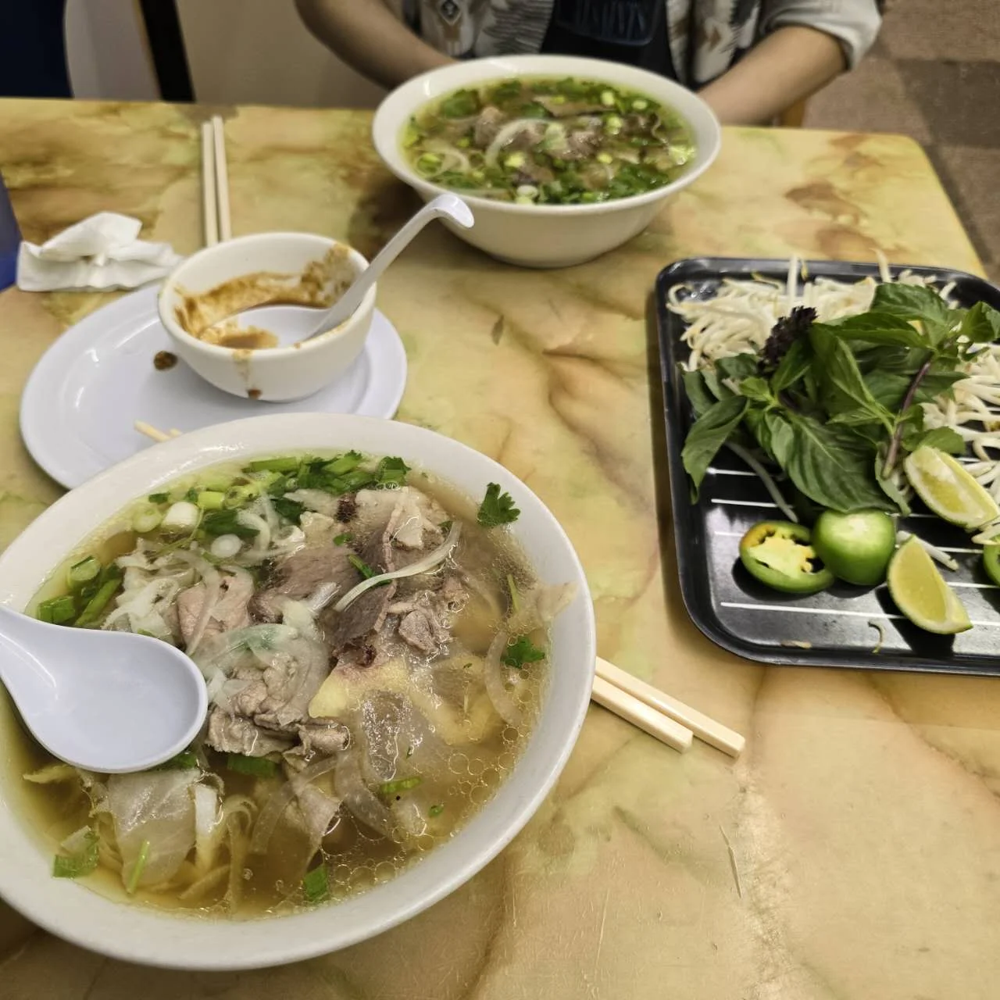
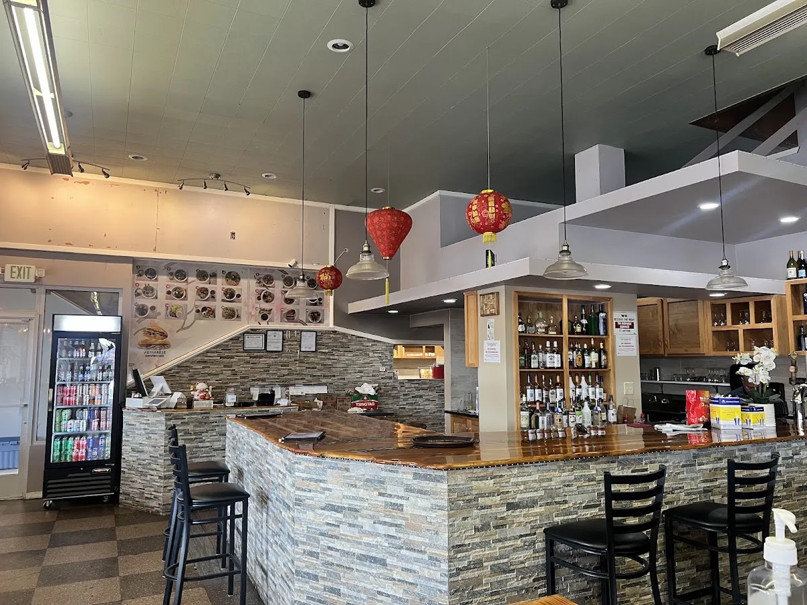

Rare Steak Phở
Phở tái
Phở, bánh mì & all the good things.
Pull up a chair in downtown Aberdeen, or
take your Vietnamese favorites to go.

A bowl, a bite, a little something on the side.
Find your kind of comfort.

YOUR TABLE IS WAITING.Find Go Get The Pho at the corner of Heron and Broadway in downtown Aberdeen, Washington. Our menu brings together Vietnamese noodle soups, bánh mì, vermicelli bowls and rice plates.
Settle into a casual dining room for lunch or dinner, bring the family, or pick up something to take home. Coffee, boba, beer and wine round out the visit.
Make your way here ↗“The lady who helped us was incredibly kind and welcoming.”
“This is a good restaurant for Vietnamese noodle soup in Aberdeen, Washington.”
“We got an order of Vietnamese Spring Rolls and two beef phos. So delicious.”
“Brisket pho was awesome. Shrimp and chicken fried rice was excellent also. Very good service.”
“The food was really good. The service was great!”
“The fried pork chop with fried egg was amazing. Brought back memories as a child.”
Selected Google review excerpts. Rating and count checked October 19, 2026; they may change.
Read the full reviews on Google ↗Casual, cozy seating for lunch, dinner and solo visits. Groups welcome, with kids’ options and high chairs available.
Vegetarian and vegan options are listed on Google. Ask about ingredients and preparation. There’s coffee, tea and a bar, too.
Free lot and street parking, wheelchair-accessible entrance, seating, parking and restroom. Credit, debit and contactless payments accepted.
Corner of Broadway & Heron Streets
(360) 637-9715 ↗Wednesday hours differ across listings. Please call to confirm. Holiday hours may vary.
Get directions ↗Yes. Call (360) 637-9715 to place an order and confirm pickup timing. Delivery is not listed as available on Google.
The menu includes vegetarian noodle soup with tofu and vegetables, tofu spring rolls, and vegetarian fried noodles. Ask the team about vegan preparation, broth, fish sauce and any allergies.
Google lists the restaurant as suitable for children and groups, with high chairs and kids’ noodles available. Call ahead for a group visit or to ask about a reservation.
Google lists a wheelchair-accessible entrance, parking, seating and restroom. Call the restaurant if you have specific access needs.